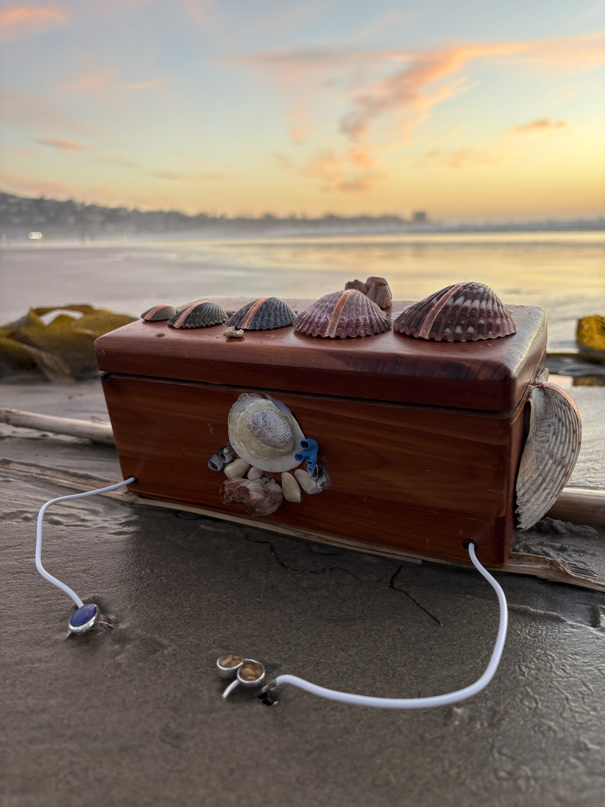
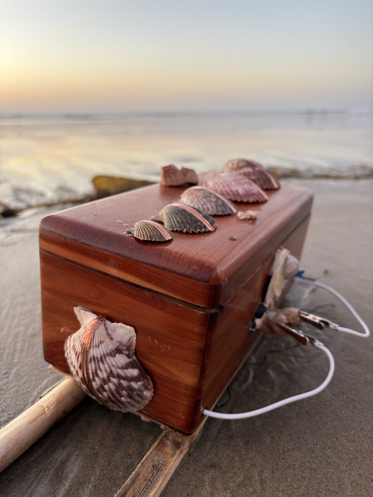
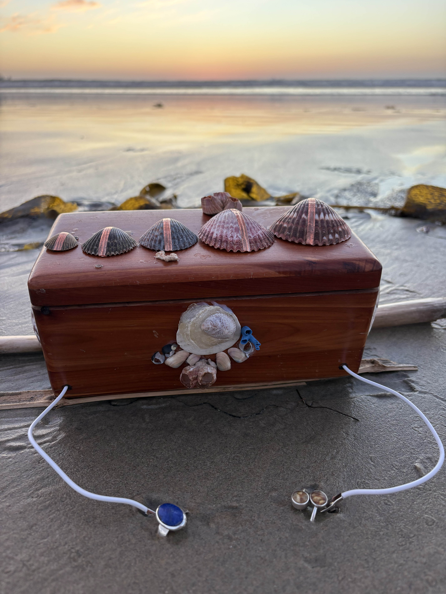
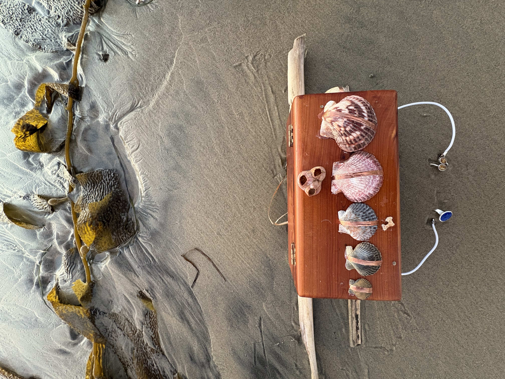

Shellfegio Synthesizer
These days I trade time for money thinking about how "good vibrations" in the water column can either recruit or repel coral and fish larvae to suppport accelerated reef restoration. So whilst I was in the midst of some downtime recovering post chest surgery, I picked up meditation and fell down a rabbit hole where I ended up in a meditation teacher training (with my mum no less), and was inspired and fascinated after learning about these so-called healing "Solfeggio frequencies" linked to energy centers (chakras). From there, the Bay Scallop shells I'd collected (over years of scallopping in the GoM) suddenly became the perfect "piano keys" for a digital synthesizer.... As a vocalist and synesthetic, acoustics literally change my mind. So I wanted to make something playful yet powerful for acoustic self-enrichment (which can also incorperate another human) using a 16 input MIDI controller Playtron (mercii Playtronica) reminding us how grounding a return to the ocean's within ourselves can be explored with a bit of listening...
sooo voilà, the Shellfeggio Synth!
This v0 prototype video uses an iPhone 14 with USB-C to MIDI controller, running GarageBand for now. Stay tuned for a vibe coded custom MIDI keyboard app for precise Solfeggio frequency calibration (396 Hz, 417 Hz, etc.) since it doesn't seem to exist yet. Live coding is another avenue I hope to explore with this, but that's for later.




